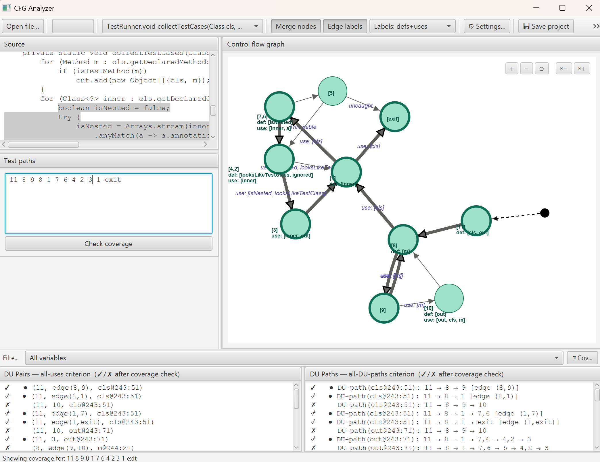
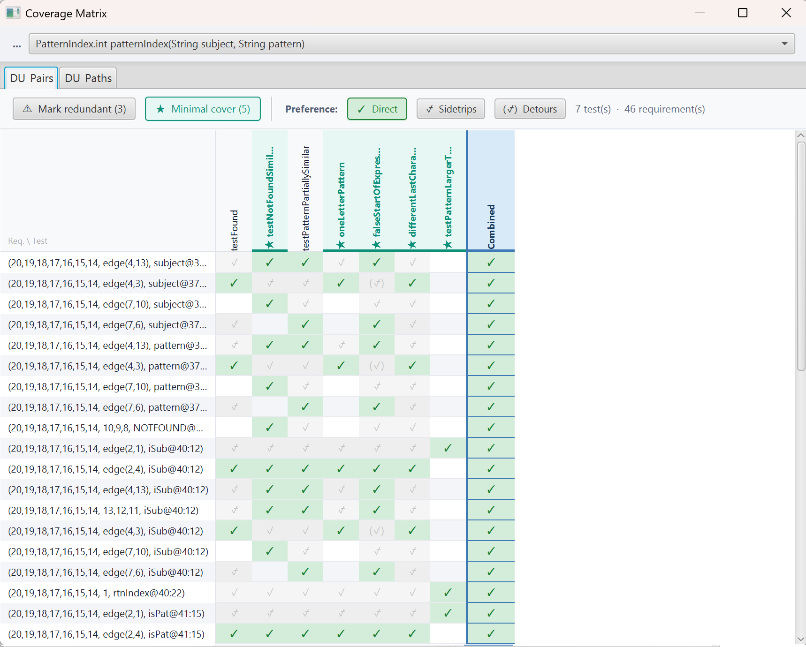

Paste a Java method, instantly visualize its CFG, compute DU pairs and DU paths, run your test suite, and see exactly what's covered — all in one desktop tool.

// full analysis with coverage check & variable filter

// coverage matrix — minimal cover & hierarchical satisfaction
Paste or open any Java class. Select a method and the tool builds a precise Control Flow Graph using Spoon, handling loops, switches, try/catch/finally, break and continue.
Automatically computes all def-use pairs and def-use paths under the all-uses and all-DU-paths criteria. Results displayed alongside the graph with ✓/✗ coverage markers.
With complex methods, the DU panels can grow long. Filter instantly by any defined variable to focus attention on one def-use relationship at a time.
Point the tool at a JUnit test file. It compiles, instruments, and runs the tests, collecting execution traces that are mapped back to CFG nodes automatically.
Enter test paths manually or import them from traces. Click any path and the graph highlights the nodes visited, with bullet markers showing per-path DU coverage.
Generate a self-contained HTML report across all methods with test paths, showing pair and path coverage percentages with full annotated listings.
Control field-write modelling, method-call def behaviour, node merging, and try/catch precision through the Settings dialog — no code changes needed.
Save the full analysis state — source, paths, coverage results, configuration — to a .cfgproject file and reload it at any time.
Inspect test-suite adequacy in a requirements × test-paths matrix. Identify redundant tests, compute a minimal cover, and see hierarchical satisfaction (direct / sidetrip / detour) per requirement.
Paste Java source directly or open a .java file. Select a method from the dropdown.
The tool builds the CFG, computes DU pairs and paths, and renders the interactive graph.
Enter paths manually, or run a JUnit test file to collect traces automatically.
Coverage is evaluated automatically. Explore gaps in the matrix dialog or export a full HTML report.
For each variable v, and each definition of v at node d, the test suite must include at least one def-clear path from d to every reachable use (node use or edge use) of v. DFTest computes every such pair and tracks which have been covered.
A stronger criterion — for each DU pair, every simple def-clear path between the definition and use must be exercised. DFTest enumerates all such paths (allowing loop-simple closing back to the def) and shows exactly which remain uncovered.
Runs on Windows, macOS and Linux — requires a JDK 21 or later. Self-contained fat JAR — no installation needed.